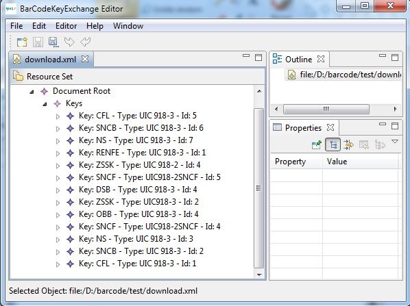
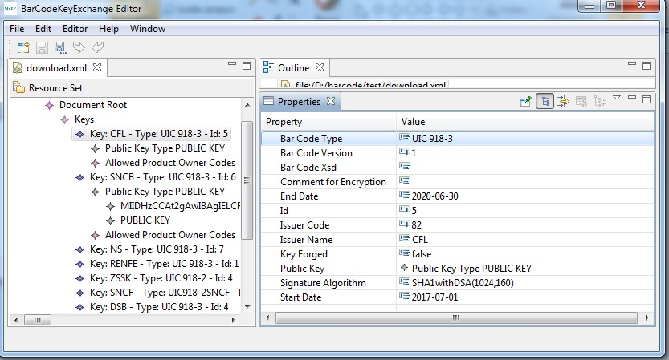

This application provides to function to create, modify and view public key exchange xml files structured according to the UIC leaflet 918.2. These files can be down loaded from the UIC web page for key exchange and can be submitted to UIC for publication.
The application shows three windows: The main window to display the open key files, the Outline View showing the content of the selected key file and the property view showing the content of the elements of the selected part of a key file.


Key files can be created or opened via the file menu. Several files can be opened at the same time.
The key files must follow the specification of UIC leaflet 918.2.
The about menu shows the license agreements of the software. By using the software you agreed to the conditions. The Details view lists all packages included and allows to view the license terms for each package.